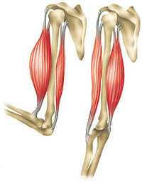
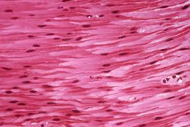
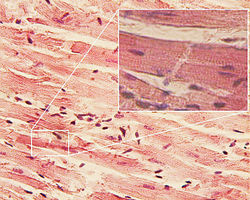

Mišići čine više od trećine tjelesne težine. Svi mišići čine muskulaturu, koja tijelu daje skladan oblik. Uloga mišića zasniva se na sposobnosti mišićnih ćelija da se grče-kontrahuju. Kontrakcijom mišića vrše se pokreti u zglobovima. Zato mišići predstavljaju aktivni dio sistema za kretanje. Mišići imaju i druge važne uloge: održavaju uspravan stav tijela, omogućavaju rad unutrašnjih organa(srca, krvnih sudova, crijeva...), važni su za održavanje stalne tjelesne temperature, štite unutrašnje organe...
U našem tijelu postoje tri vrste mišića, koje se međusobno razlikuju prema građi mišićnog tkiva: poprečno-prugasti ili skeletni, glatki i srčani. Mišići se razlikuju i prema funkcijama koje obavljaju.
Izgrađeni su od dugačkih mišićnih vlakana, na kojima se pod elektronskim mikroskopom mogu uočiti pruge(po kojima su i dobili ime). Ovim mišićima pripada većina mišića našeg tijela. Nazivaju se i skeletni mišići jer su tetivama vezani za kosti. U tijelu čovjeka postoji oko 600 skeletnih mišića, različitog oblika i veličine. Odgovorni su za kretanje tijela. Takođe, mišići omogućavaju govor i mimiku, koja je važna u komunikaciji. Poprečno-prugasti mišiči se kontrahuju veoma brzo, kontrakcije traju od 1/10 do 1/100 dijela sekunde. Za razliku od srčanog i glatkih mišića, pokreću se kontrolom volje, pa se nazivaju voljni mišići.
|  | Na slici se vide biceps i triceps. Na krajevima ovih skeletnih mišića vide se tetive kojima su ovi mišići vezani za kosti. |
Građeni su od glatkog mišićnog tkiva. Nalaze se u zidovima unutrašnjih organa: krvnih sudova, crijeva, mokraćne bešike... i omogućavaju njihov rad: protok krvi kroz arterije, peristaltičke pokrete organa za varenje, pražnjenje mokraćne bešike... Glatki mišići se kontrahuju sporo, a kontrakcija im traje duže nego kod skeletnih i srčanog mišića (nekada i do 90 sekundi). Rad glatkih mišića ne zavisi od naše volje, pa se ovi mišići nazivaju nevoljni mišići.
|  | Na slici se vide mišićne ćelije glatkog tkiva. Vretenaste su i njihovo jedro je postavljeno u središnjem dijelu ćelije. |
Sastoji se od kratkih, razgranatih poprečno prugastih mišićnih vlakana. Vlakna srčanog mišića su međusobno povezana tako da grade jedinstvenu mrežu. Ovakva građa omogućava srcu sinhronizovano kontrahovanje, koje se odvija nezavisno od naše volje.
|  | Na slici se vide ćelije srčanog mišića. Poprečna ispruganost mišićnih vlakana srca nije izražena kao kod skeletnih mišića. |